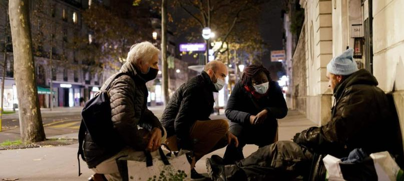

About Us
Homefully is more than a campaign — it’s a movement of compassion, action, and hope. We are a team of dedicated volunteers, social workers, and everyday people who believe that no one should be left behind.
Our Vision
We dream of a world where everyone has a place to call home. Where stability, dignity, and safety are not privileges — but rights.
Our Journey
- 2021 – Launch of Homefully by a small group of students with a big vision
- 2022 – First outreach campaign and meal distribution in downtown Lyon
- 2023 – 100+ volunteers joined the movement
- 2024 – Partnership with local shelters and first reintegration success stories
Our Approach
- 🔹 Long-term housing solutions tailored to individual needs
- 🔹 Daily access to food, hygiene, and essentials
- 🔹 Social and professional reintegration workshops
- 🔹 Emotional and psychological support
- 🔹 Advocacy and community awareness
Our Team
Behind Homefully is a group of passionate individuals committed to action, dignity, and solidarity.
- Monsef S. – Founder & Community Coordinator
- Zerka A. – Logistics & Food Distribution Lead
- Chaker . – Volunteer Coordinator
- Naïm Z. – Digital and Public Awareness Manager
Join the Mission
It starts with one step — one meal, one gesture, one helping hand. Be a part of the solution.
What We Believe
We believe in second chances. We believe that no human being is disposable. We believe that real change starts with compassion, followed by action.
Become a VolunteerWant to be part of this story? Join us as a volunteer or support our mission today.
Support Our Work